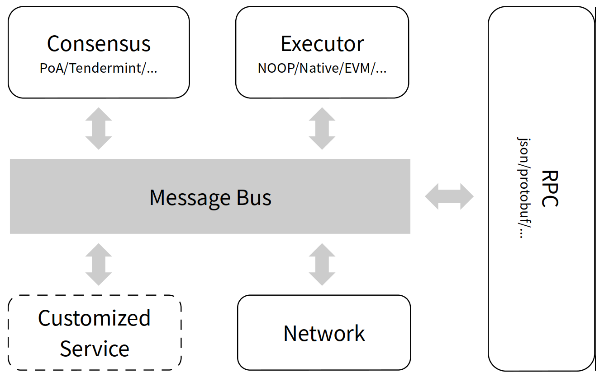

系统架构¶
微服务¶
联盟链在交易吞吐量低、交易实时性上很难满足行业应用的要求。另外，区块链 技术发展迅速，单体应用也很难满足演进要求。
为了解决这两个问题， CITA将单个节点按照功解构为交易共识、合约引擎、链 式存储、网络同步、服务网关等多个松耦合的微服务，一方面利用云计算基础设 施来按需提升性能，另一方面，各个组件可独立替换升级。
另外，采用消息总线进行通信，各个微服务可以利用异步消息简化处理，又可以 确保消息的安全、可靠送达。当与外部系统集成时，外部系统可以直接访问消息 总线，而无需CITA做适配。

CITA微服务架构
ProtocolBuffer¶
ProtocolBuffer 是一种用于序列化结构数据的语言无关、平台无关的扩展机制， 经常被用于跨进程、跨机器的应用程序间的数据通信，特别是微服务间的数据通 信。它的编译器接受接口描述语言（IDL）作为输入，通过不同语言的插件，可以编译 成各自语言的本地代码。
CITA采用了ProtocolBuffer作为数据序列化的方法。一方面，序列化/反序列化 性能高，另一方面，不同微服务间可以通过接口描述语言很方便的集成到CITA的 微服务架构中。
Block¶
Block 结构
- version: u32
- header: BlockHeader 结构
- body: BlockBody 结构
BlockHeader 结构
- prevhash: 上一个块的 Keccak 256-bit 哈希值
- timestamp: Unix 时间戳
- proof: Proof 结构，出块人签名
- commit: Commit 结构，Chain处理结果
- height: uint64 块号
BlockBody 结构
- transactions: 交易列表
Commit 结构
- stateRoot: Keccak 256-bit，状态root
- transactionsRoot: Keccak 256-bit，交易列表root
- receiptsRoot: Keccak 256-bit，交易回执root
Transaction¶
Transaction 结构
- to: 160-bit address；如果为空表示创建合约
- content: bytes，交易 data
- valid_until_block: 交易超时设置
- signature: bytes，签名
- crypto: 签名类型